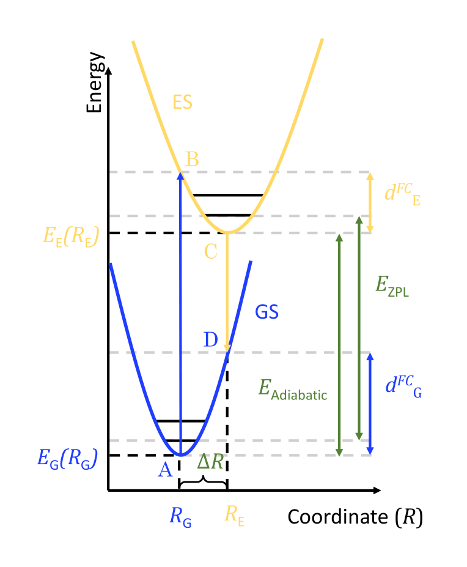

Al2O3:Ti study¶
This section present a short overview of the use of the main features of Hylight, applied a the system \(\text{Al}_2\text{O}_3:\text{Ti,Mg}\). The synthesis and luminescence characterization of the doped material showed a blue luminescence that we tried to simulate. The cell used was a 2x2x1 supercell of the conventional cell of \(\text{Al}_2\text{O}_3\) in which one Al atom was substituted with a Ti atom and another Al was substituted with a Mg atom (to compensate the charge of a Ti4+). For practical reasons, the vibration modes used in this tutorial are computed with CRYSTAL 17. Other computations (positions and energies) comes from VASP 5.4.4.
Preliminaries¶
Here are some utility functions and import that will be used throughout the study.
%matplotlib inline
import numpy as np
import matplotlib.pyplot as plt
from hylight.constants import *
import logging
logging.getLogger().setLevel(logging.INFO) # setting the logging level to INFO
# Helper functions to deal with experimental spectrum
def best_max(raw_x, raw_y, f=0.95):
"Fit a 2nd order polynom to get a position of the maximum without the noise."
guess = np.max(raw_y)
y = raw_y[raw_y > f * guess]
x = raw_x[raw_y > f * guess]
x1, x2, x3, x4 = np.mean(x**1), np.mean(x**2), np.mean(x**3), np.mean(x**4)
x2y = np.mean(x**2 * y)
xy = np.mean(x * y)
my = np.mean(y)
A = np.array([[x4, x3, x2], [x3, x2, x1], [x2, x1, 1.0]])
B = np.array([[x2y, xy, my]]).transpose()
alpha, beta, gamma = np.linalg.solve(A, B)[:, 0]
return -0.5 * beta / alpha, gamma - 0.25 * beta**2 / alpha
def load_exp(path, sep=" ", skip=0):
exp = np.loadtxt(path, delimiter=sep, skiprows=skip)
x, y = eV1_in_nm / exp[:, 0], exp[:, 1]
xmax, ymax = best_max(x, y)
y /= ymax
return x, y, xmax
def select_interval(x, y, emin, emax, norm=True, npoints=None):
slice_ = (x > emin) * (x < emax)
xs, ys = x[slice_], y[slice_] / (np.max(y[slice_]) if norm else 1.0)
if npoints is not None:
emin = max(np.min(xs), emin)
emax = min(np.max(xs), emax)
xint = np.linspace(emin, emax, npoints)
return xint, interp1d(xs, ys)(xint)
return xs, ys
To perform the simulation of the spectrum of \(\text{Al}_2\text{O}_3:\text{Ti,Mg}\) we need a few pieces of information. The following diagram shows the four points A, B, C and D that need to be computed in DFT. We used constrained DFT to compute B and C with an explicit hole in the VBM and an electron in the CBM. The cDFT and the regular DFT computations provides us with total energies and the positions \(R_G\) and \(R_E\) that we will use as inputs in the next section.

Given the geometry \(R_G\) we also perform a DFPT computation to get the eigen values and eigenvectors of the dynamical matrix, that is we get the \(\Gamma\) vibrational modes of the crystal.
The modes are extracted from the CRYSTAL output file and stored in the vib_ti_mg_edge_crys.log.npz with the command line tool hylight-modes:
$ hylight-modes convert --from crystal vib_ti_mg_edge_crys.log vib_ti_mg_edge_crys.log.npz
Loaded 360 modes from vib_ti_mg_edge_crys.log.
Wrote vib_ti_mg_edge_crys.log.npz.
Electronic and vibrational parameters¶
Here we declare the inputs that will be used later.
The energy differences are computed with VASP from DFT ground state and cDFT excited state computations.
fc_shift_gs = 0.5846914 # D-A
fc_shift_es = 0.5312436 # B-C (only used for the width approximation)
e_adia = 3.49839858 # C-A
e_vert = e_adia - fc_shift_gs # C-D
outcar = "vib_ti_mg_edge_crys.log.npz" # vibrations
poscar_gs = "POSCAR_GS" # R_G
poscar_es = "POSCAR_S1" # R_E
T = 300 # measure temperature (K)
print(f"Adiabatic energy difference: {e_adia:0.3f} eV")
print(f"Vertical energy difference: {e_vert:0.3f} eV")
Adiabatic energy difference: 3.498 eV
Vertical energy difference: 2.914 eV
Vibrational properties investigation¶
We now plot the spectral function to identify important modes.
from hylight.multi_modes import plot_spectral_function
fig, (ax_fc, ax_s) = plot_spectral_function(
outcar,
poscar_gs,
poscar_es,
use_cm1=True,
disp=5e-1,
mpl_params={
"S_stack": {"color": "orange"},
"FC_stack": {"color": "orange"},
"S_peaks": {"color": "blue", "lw": 1.5},
"FC_peaks": {"color": "blue", "lw": 1.5},
},
)
ax_fc.set_ylabel("$d_{FC,j}$ (meV)")
ax_s.set_ylabel("$S_j$ (A. U.)")
plt.tight_layout()
fig.set_size_inches((9, 7))
plt.savefig("spectral_func.png")
There are a few dominant modes around 830 cm\(^{-1}\). We can export them to Jmol files to visualize it.
from hylight.loader import load_phonons
from hylight.multi_modes import compute_delta_R
delta_R = (
compute_delta_R(poscar_gs, poscar_es) * 1e-10
) # careful, Mode.huang_rhys expects SI units
modes, _, _ = load_phonons(outcar)
big_modes = [m for m in modes if m.huang_rhys(delta_R) > 0.4]
print("Important modes:", len(big_modes))
from hylight.jmol import export
mode = big_modes[0]
export(
"big_mode.jmol",
mode,
scale=20.0,
offset=np.array([0.5, 0.5, 0.5]), # move the origin of half b
bonds=[ # bonds to show, with length between 0 and 2.2 A
("Al", "O", 0, 2.2),
("Ti", "O", 0, 2.2),
],
atom_colors=[ # colors to show atoms
("Al", "#3050FF"), # blue
("Mg", "#FFB000"), # orange
("Ti", "#A0A0A0"), # grey
("O", "#FF1010"), # red
],
)
Important modes: 2
Here is the result in Jmol:
This mode is mostly composed of bulk movement of the oxygen sublattice.
Line width approximation¶
We now will use a semi-classical model to approximate the width of the band. The specific model for the width is a 1D reduction of the system, and the effective vibration frequency is computed as a mean over FC shifts.
from hylight.guess_width import guess_width, OmegaEff, WidthModel
width = guess_width(
outcar,
(poscar_gs, poscar_es),
fc_shift_gs,
fc_shift_es,
T,
omega_eff_type=OmegaEff.FC_MEAN,
width_model=WidthModel.ONED,
)
print(f"Guessed line FWHM = {width*1e3:0.1f} meV")
S = 8.055327600850317
d_fc^g,v = 0.6477615566764704 eV
d_fc^e,v = 0.5885483886207532 eV
Effective phonon energy (GS) = 0.088054437806992 eV / 710.2069370108776 cm1
Effective phonon energy (ES) = 0.08393338746477763 eV / 676.9684244077196 cm1
ex_fwhm = 0.6267042207345681 eV
Using a Gaussian line shape.
Guessed line FWHM = 561.6 meV
Spectrum simulation¶
Finally, taking vibrational and electronic parameters into account we simulate the spectrum.
from hylight.multi_modes import compute_spectrum
e, sp = compute_spectrum( # simulate the spectrum
outcar,
(poscar_gs, poscar_es),
e_adia,
width,
)
_, max_th = max(zip(sp, e)) # extract the maximum of emission energy
print(f"Computed maximum of emission: {max_th:.3} eV")
Mode 359 has a reference position somewhat far from GS position. (atom 47 moved by 0.02393033937295447)
Total Huang-Rhys factor 8.055327600850317.
Using a Gaussian line shape.
Computed maximum of emission: 2.98 eV
Plotting¶
Here we load the experimental data that will be used for comparision with the simulation.
exp_e, exp_i, max_emission = load_exp("recorded_emission.txt")
print(f"Measured maximum of emission: {max_emission:.3} eV")
Measured maximum of emission: 2.98 eV
Finally we setup a plot to show the result of the simulation against the measurement.
plt.figure(figsize=(9, 7))
e, sp = e[1:], sp[1:]
exp_e, exp_i = exp_e[1:], exp_i[1:]
plt.plot(exp_e, exp_i, "b", lw=3, label="Experiment")
plt.plot(e, sp, ":", color="b", lw=3, label=f"Simulation (T = {T} K)")
plt.xlim(1.7, 4)
plt.xlabel("Energie (eV)")
plt.ylabel("Emission intensity (A. U.)")
ax = plt.gca()
np.seterr(
divide="ignore"
) # there is a division by zero occuring in the next line but it is irrelevant for our xlim
secax = ax.secondary_xaxis(
"top", functions=(lambda x: eV1_in_nm / x, lambda x: eV1_in_nm / x)
)
secax.set_xlabel("$\\lambda$ (nm)")
plt.tight_layout()
leg = plt.legend(prop={"size": 20})
plt.savefig("al2o3_ti_spectra.png")
We can see that, while the width is overestimated by our rough approximation, the positioning of the band is very well reproduced.